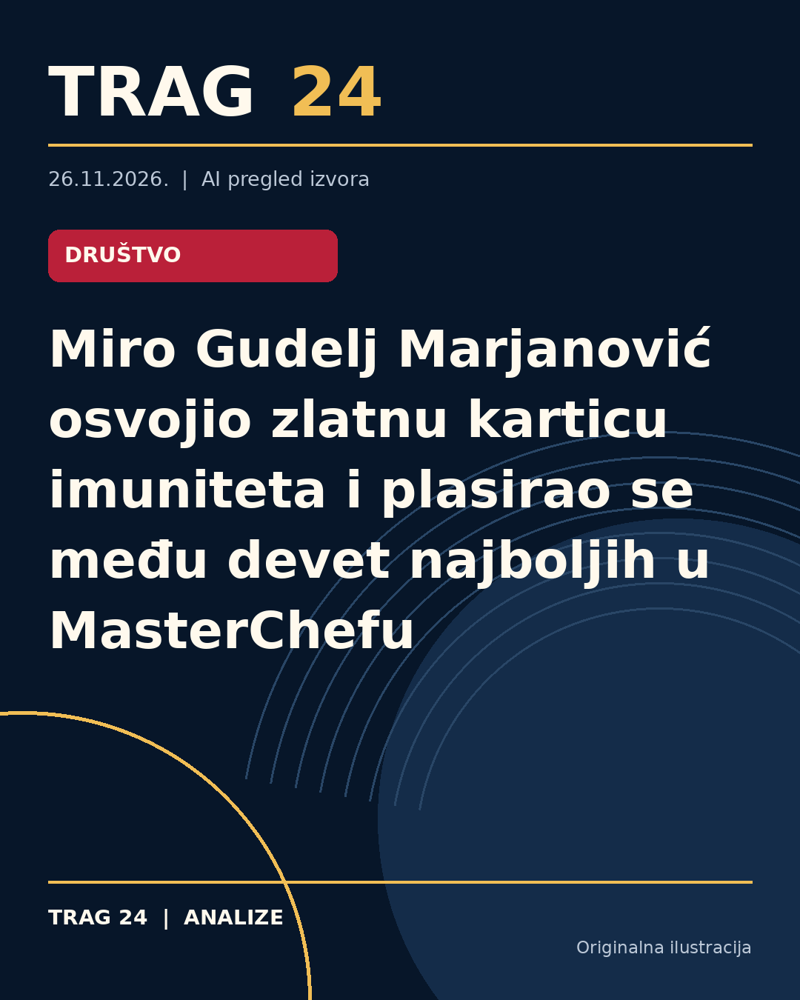

Miro Gudelj Marjanović osvojio zlatnu karticu imuniteta i plasirao se među devet najboljih u MasterChefu

ŠTA SE DOGODILO
U popularnom kulinarskom takmičenju MasterChef, Miro Gudelj Marjanović nadmašio je Franku i Juana u izazovu koji je postavio Stjepan Vukadin i time osvojio zlatnu karticu imuniteta. Ovom pobedom Miro je osigurao direktan prolaz među najboljih devet takmičara.
HRONOLOGIJA
Takmičenje je obuhvatilo tri faze. Prvo, kandidati su u roku od 30 sekundi proučavali Stjepanovo jelo i zatim prepoznavali njegove sastojke – tu su Juan i Franka osvojili po pet bodova, a Miro dva. U drugoj fazi replicirali su izgled tanjira, pri čemu je najuspešniji bio Juan i time stekao prednost. U završnoj fazi, kandidati su imali 50 minuta za pripremu jela, uključujući i zahtevno čišćenje plavog raka. Nakon pripreme jela, Stjepan je odmah isključio Juana iz daljeg takmičenja za karticu imuniteta, dok su Franka i Miro pripremili veoma kvalitetna jela. Na kraju, zbog odsustva jedne komponente u jelima Franke, zlatna kartica je pripala Miru.
ŠTA NAVODE IZVORI
Iz oba izvora izveštava se da je Stjepan Vukadin detaljno objasnio sastav jela – buzaru napravljenu od jakobovih kapica, kozica, plavog raka i pastu od jakobovih kapica i kozica, sa aiolijem i prženim njokima od sipinog crnila. Miro je pohvalio jelo rekavši da je to najbolji tanjir koji je probao, dok su im se svi troje kandidata suočili sa zahtevnim zadacima. Stjepan je istakao da je odsustvo plavog raka kod Franke bilo presudno za pobedu Mira.
ŠTA JE POTVRĐENO
Potvrđeno je da je Miro osvojio zlatnu karticu imuniteta i time obezbedio plasman u narednu fazu takmičenja među devet najboljih. Takođe je potvrđeno da su Juan, Franka i Miro učestvovali u izazovu sa tri faze i da je Stjepan Vukadin bio mentor i sudija u ovom delu takmičenja.
ŠTA NIJE POTVRĐENO
Nema potvrde o datumu održavanja takmičenja ili detaljima naknadnih faza MasterChefa. Takođe, nisu potvrđene dalje prognoze ili očekivanja u vezi sa daljim razvojem takmičenja za Miru, Franku i Juana.
ŠTA OSTАJE OTVORENO: Ostaje nepoznato kako će se dalje razvijati takmičenje, kao i dalji plasman ostalih kandidata. Nije poznato ni kako će ostali takmičari reagovati na rezultat ovog izazova i kakve će biti verdere strategije u nastavku takmičenja.
Izvori
- https://www.index.hr/food/clanak/miro-nadmasio-franku-i-juana-te-osigurao-mjesto-medju-najboljih-devet/2860880.aspx
- https://www.24sata.hr/show/miro-nadmasio-franku-i-juana-te-osigurao-mjesto-medu-devet-najboljih-kartica-je-u-dzepu-1171123
Ova analiza je pripremljena uz pomoć veštačke inteligencije na osnovu javno dostupnih izvora. Navodi izvora nisu nužno nezavisno potvrđeni.